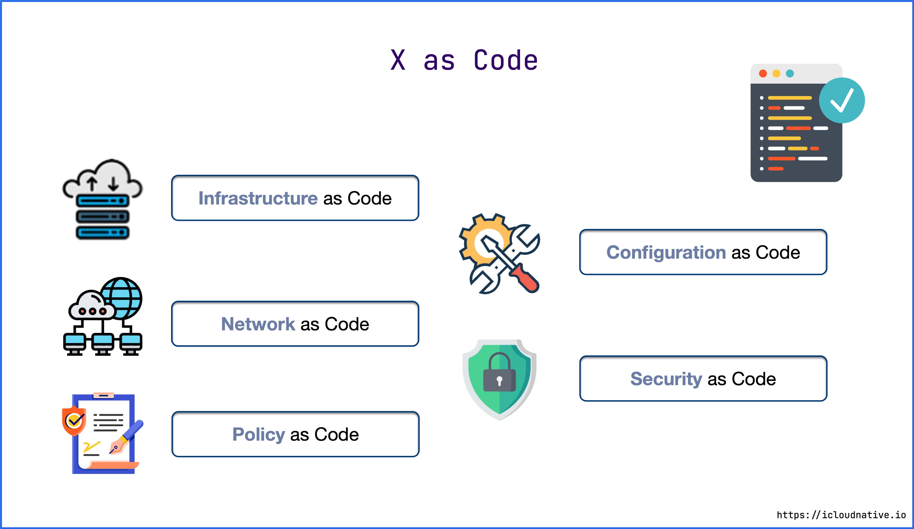
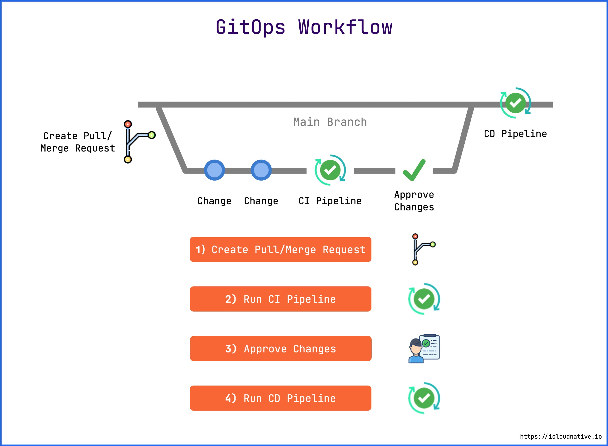
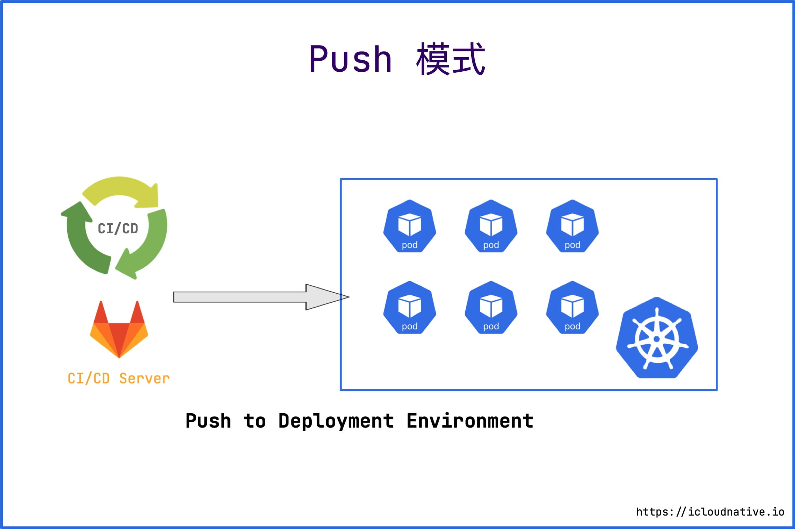
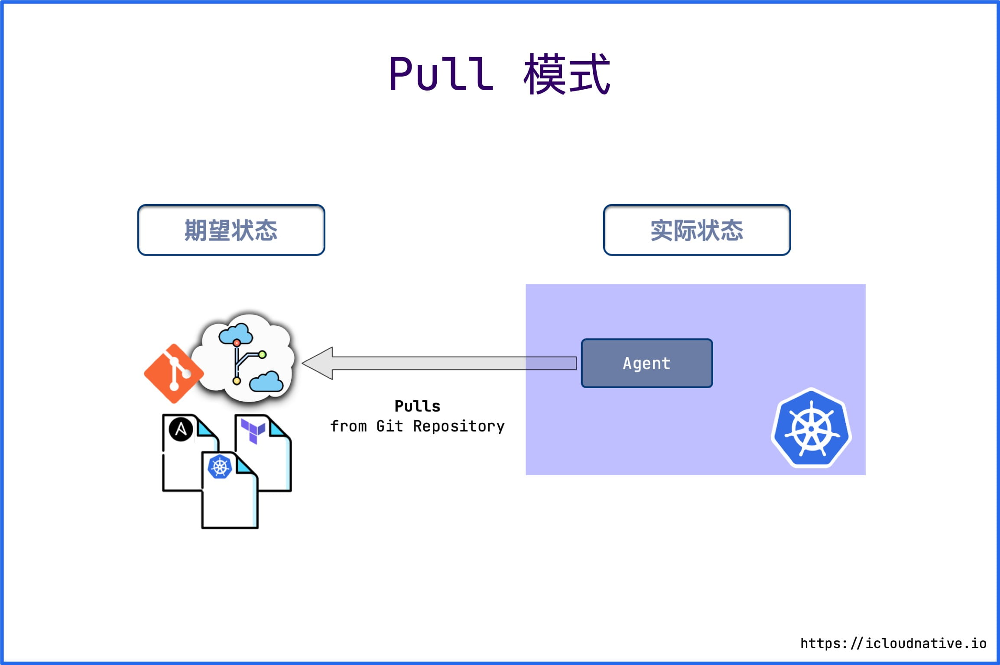

GitOps 介绍
本文最后更新于：2023年1月3日 早上
GitOps 这个概念最早是由 Kubernetes 管理公司 Weaveworks 公司在 2017 年提出的，如今已经过去了 5 个年头，想必大家对这个概念早有耳闻，但你可能并不知道它到底是什么，它和 DevOps 到底是啥关系，本文就来帮大家一一解惑。
基础设施即代码
在理解 GitOps 之前，我们需要先理解什么是基础设施即代码。
基础设施即代码（Infrastructure as Code, IaC），顾名思义，表示使用代码（而非手动流程）来定义基础设施，研发人员可以像对待应用软件一样对待基础设施，例如：
- 可以创建包含基础架构规范的声明式配置文件，从而便于编辑和分发配置。
- 可以确保每次配置的环境都完全相同。
- 可以进行版本控制，所有的变更都会被记录下来，方便溯源。
- 可以将基础设施划分为若干个模块化组件，并通过自动化以不同的方式进行组合。
当然，广义上的 IaC 不仅仅只关于基础设施，还包含了网络、安全、配置等等，所以广义上的 IaC 又叫 X as Code。

比如你想在 AWS 中创建服务器，配置网络，部署 Kubernetes 集群以及各种工作负载，你只需要定义好 Terraform 或 Ansible 的声明式配置，以及 Kubernetes 的配置清单即可，免去一切繁杂的手动操作。
GitOps 是什么
GitOps = IaC + Git + CI/CD，即基于 IaC 的版本化 CI/CD。它的核心是使用 Git 仓库来管理基础设施和应用的配置，并且以 Git 仓库作为基础设施和应用的单一事实来源，你从其他地方修改配置（比如手动改线上配置）一概不予通过。
Git 仓库中的声明式配置描述了目标环境当前所需基础设施的期望状态，借助于 GitOps，如果集群的实际状态与 Git 仓库中定义的期望状态不匹配，Kubernetes reconcilers 会根据期望状态来调整当前的状态，最终使实际状态符合期望状态。
另一方面，现代应用的开发更多关注的是迭代速度和规模，拥有成熟 DevOps 文化的组织每天可以将代码部署到生成环境中数百次，DevOps 团队可以通过版本控制、代码审查以及自动测试和部署的 CI/CD 流水线等最佳实践来实现这一目标，这就是 GitOps 干的事情。
GitOps vs DevOps
从广义上来看，GitOps 与 DevOps 并不冲突，GitOps 是一种技术手段，而 DevOps 是一种文化。GitOps 是一种实现持续交付（Continuous Delivery）、持续部署（Continuous Deployment）和基础设施即代码（IaC）的工具和框架，它是支持 DevOps 文化的。
从狭义上来看，GitOps 与 DevOps 有以下几个区别：
首先，GitOps 是以目标为导向的。它使用 Git 来维护期望状态，并不断调整实际状态，最终与期望状态相匹配。而 DevOps 更多关注的是最佳实践，这些实践可以普遍应用于企业的每一个流程。
其次，GitOps 采取声明式的操作方法，而 DevOps 同时接受声明式和命令式的方法，所以 DevOps 除了适用于容器环境之外，还适用于虚拟机和裸机环境。
最后，GitOps 重新定义了云原生场景下的 CI/CD，它以 Git 作为中心的不可变状态声明，以加快持续部署速度。
GitOps 的设计哲学
想要使用 GitOps 来管理你的基础设施和应用，需要践行以下几个原则：
1 声明式
必须通过声明式来描述系统的期望状态。例如 Kubernetes，众多现代云原生工具都是声明式的，Kubernetes 只是其中的一种。
2 版本控制/不可变
因为所有的状态声明都存储在 Git 仓库中，并且把 Git 仓库作为单一事实来源，那么所有的操作都是从 Git 仓库里驱动的，而且保留了完整的版本历史，方便回滚。有了 Git 优秀的安全保障，也可以使用 SSH 密钥来签署 commits，对代码的作者和出处实施强有力的安全保障。
3 自动应用变更
Git 仓库中声明的期望状态发生了任何变更，都可以立即应用到系统中，而且不需要安装配置额外工具（比如 kubectl），也不需要配置 Kubernetes 的认证授权。
4 持续的 Reconciliation
Reconciliation 其实最早是 Kubernetes 里的一个概念，表示的是确保系统的实际状态与期望状态一致的过程。具体的实现方式是在目标环境中安装一个 agent，一旦实际状态与期望状态不匹配，agent 就会进行自动修复。这里的修复比 Kubernetes 的故障自愈更高级，即使是手动修改了集群的编排清单，集群也会被恢复到 Git 仓库中的清单所描述的状态。
鉴于以上这些设计哲学，我们来看一下 GitOps 的工作流：

- 首先，团队中的任何一个成员都可以 Fork 仓库对配置进行更改，然后提交 Pull Request。
- 接下来会运行 CI 流水线，一般会做这么几件事情：验证配置文件、执行自动化测试、检测代码的复杂性、构建 OCI 镜像、将镜像推送到镜像仓库等等。
- CI 流水线运行完成后，团队中拥有合并代码权限的人将会将这个 Pull Request 合并到主分支中 。一般拥有这个权限的都是研发人员、安全专家或者高级运维工程师。
- 最后会运行 CD 流水线，将变更应用到目标系统中（比如 Kubernetes 集群或者 AWS） 。
整个过程完全自动化且透明，通过多人协作和自动化测试来保证了基础设施声明配置的健壮性。而传统的模式是其中一个工程师在自己的电脑上操作这一切，其他人不知道发生了什么，也无法对其操作进行 Review。
Push vs Pull
CD 流水线有两种模式：Push 和 Pull。
Push 模式
目前大多数 CI/CD 工具都使用基于 Push 的部署模式，例如 Jenkins、CircleCI 等。这种模式一般都会在 CI 流水线运行完成后执行一个命令（比如 kubectl）将应用部署到目标环境中。

这种 CD 模式的缺陷很明显：
- 需要安装配置额外工具（比如 kubectl）；
- 需要 Kubernetes 对其进行授权；
- 需要云平台授权；
- 无法感知部署状态。也就无法感知期望状态与实际状态的偏差，需要借助额外的方案来保障一致性。
Kubernetes 集群或者云平台对 CI 系统的授权凭证在集群或云平台的信任域之外，不受集群或云平台的安全策略保护，因此 CI 系统很容易被当成非法攻击的载体。
Pull 模式
Pull 模式会在目标环境中安装一个 Agent，例如在 Kubernetes 集群中就靠 Operator 来充当这个 Agent。Operator 会周期性地监控目标环境的实际状态，并与 Git 仓库中的期望状态进行比较，如果实际状态不符合期望状态，Operator 就会更新基础设施的实际状态以匹配期望状态。

只有 Git 的变更可以作为期望状态的唯一来源，除此之外，任何人都不可以对集群进行任何更改，即使你修改了，也会被 Operator 还原为期望状态，这也就是传说中的不可变基础设施。
目前基于 Pull 模式的 CD 工具有 Argo CD， Flux CD 以及 ks-devops。
GitOps 的优势
一般 GitOps 首选的都是基于 Pull 的部署模式，因为这种模式有很多不可替代的优势。
更强大的安全保障
上面已经提到了，使用 GitOps 不需要任何 Kubernetes 或者云平台的凭证来执行部署，Kubernetes 集群内的 Argo CD 或者 Flux CD 只需要访问 Git 仓库，并通过 Pull 模式来更新即可。
另一方面，Git 由用于跟踪和管理代码变更的强大密码学支持，拥有对变更进行签名以证明作者身份和来源的能力，这是保障集群安全的关键。
Git 作为事实的唯一真实来源
因为所有的应用包括基础设施的声明式配置都保存在 Git 中，并把 Git 作为应用系统的唯一事实来源，因此可以利用 Git 的强大功能操作所有东西，例如版本控制、历史记录、审计和回滚等等，无需使用 kubectl 这样的工具来操作。
提高生产力
Git 也是开发人员非常熟悉的工具，通过 Git 不断迭代，可以提高生产率，加快开发和部署速度，更快地推出新产品，同时提高系统的稳定性和可靠性。
更容易合规的审计
使用 GitOps 的基础设施可以像任何软件项目一样使用 Git 来管理，所以同样可以对其进行质量审计。当有人需要对基础设施进行更改时，会创建一个 Pull Request，等相关人员对其进行 Code Review 之后，更改才可以应用到系统中。
总结
GitOps 是对现有 DevOps 文化的补充，它使用 Git 这样的版本控制系统来自动部署基础设施，部署过程清晰可见，可以查看和跟踪对系统进行的任何变更，提高了生产力、安全性和合规性。而且 GitOps 提供了更优雅的可观测性，可以实时观测部署状态，并采取行动使实际状态与期望状态保持一致。
而且在 GitOps 中，整个系统都是通过声明式来描述的，天然适合云原生环境，因为 Kubernetes 也是这么设计的。